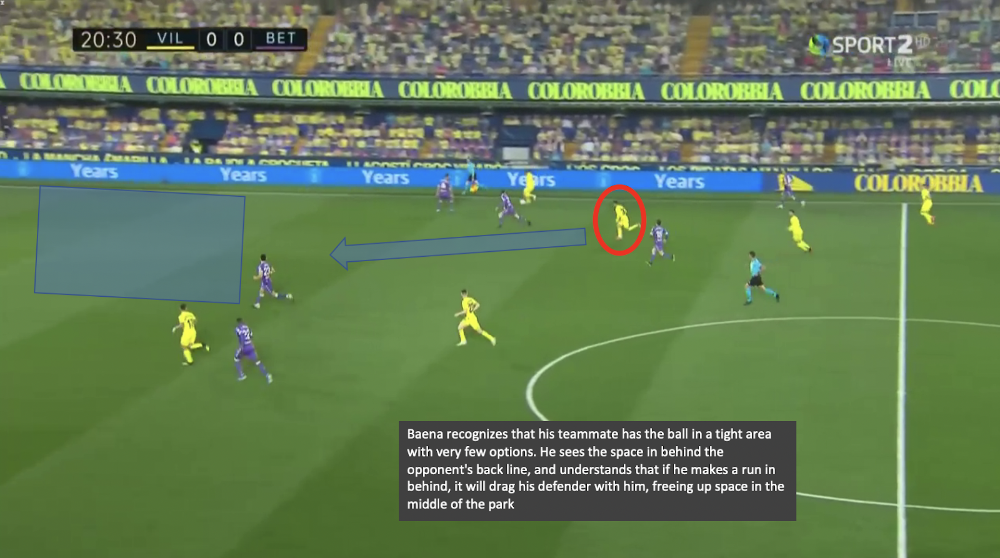
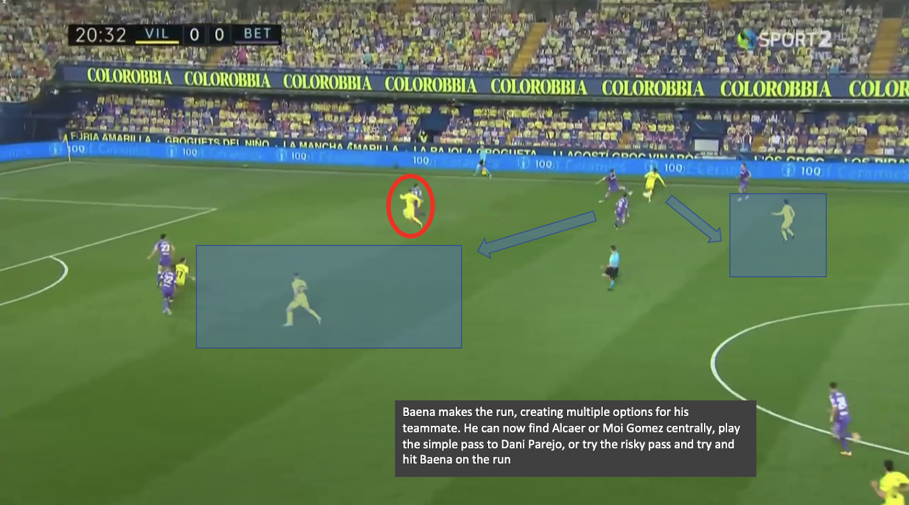
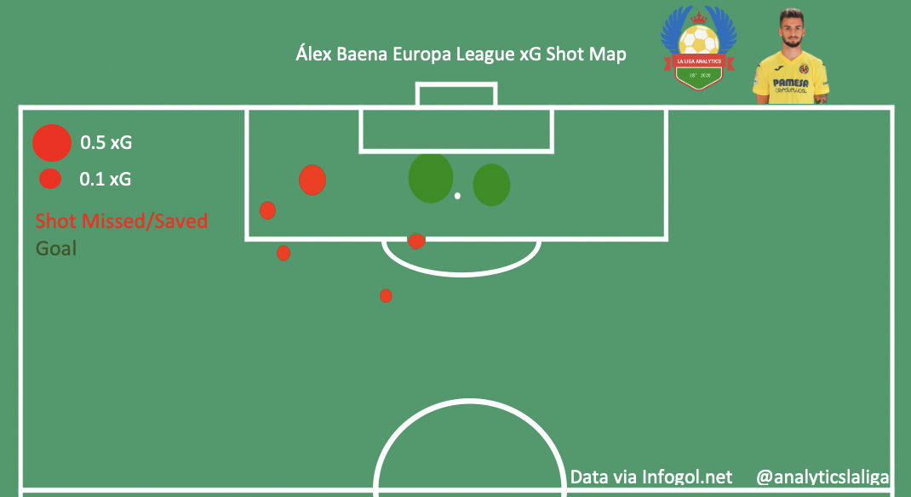

Álex Baena Scouting Report by Charlie Tuley - February 28, 2021
|
ctuley@umich.edu
Álex Baena
Club: Villarreal CF
Nationality: Spain
Position(s): Right Wing, Central Midfield
Squad Number: 32
Date of Birth (Age): July 20, 2001 (19)
Dominant Foot: Right
Height: 1.74m, 5ft 9in
Market Value (via Transfermarkt): €1.8M
Contract Expires: June 30, 2025
All video clips come from Wyscout.com
History
Born in Roquetas de Mar, Andalusia in 2001, Álejandro Baena joined Villarreal’s youth academy at the age of 10. He spent his entire youth career with Villarreal, working his way up the ladder until he made his first-team debut on July 13, 2020, in a loss against Real Sociedad. Since then, he has made 14 appearances (759 minutes) for Villarreal, playing in La Liga, the Europa League, and the Copa del Rey. Traditionally a winger (playing on both the left and right), Baena has been converted to play as a central midfielder by Unai Emery since joining the first team.
Defense
No matter where on the field he is playing, Baena is an intense presser. He averages 21.7 pressures per 90 minutes played in La Liga, ranking near the top of all Villarreal players. When playing in Emery’s three-man midfield (typically on the right side), he often joins the forwards in pressing the opposition backline to try and regain possession as quickly as possible. On the opposite side, he also tracks back well to support his fullbacks in defense. He works hard to track runners coming from deep in the opposition territory, preventing them from affecting the attack.
However, his physical execution of defending opponents is somewhat lacking. He is very aggressive in his challenges, and this results in them often being quite clumsy. When he puts in a challenge on an opponent, it most often results in a foul or the ball being put out of bounds by Baena’s strong follow-through. He very rarely actually wins the ball back from his physical challenges.
Given that he is only 5’9’’, he often struggles with aerial duels. He’s only participated in 9 aerial duels in his 744 minutes this season, and he has won only 2 of them (a 22.2% win rate). This isn’t a large issue, as he contests so few aerial duels, but it’s something to look out for.
Dribbling
Baena rarely dribbles at his opponents, which is unusual, as he has years of experience as a winger. Instead, he usually takes two or three touches when on the ball, and then tries to find a pass. If he does encounter a defender, he will try and create space for himself to be able to pass to a teammate, rather than try and beat the defender with his skill and pace.
When it comes to pace and skill, he is a bit behind the curve. While he is quick for a short spurt (2-3 steps) his overall sprint speed is not as fast as most players in La Liga, especially the fullbacks that he usually matches up against. His technicality on the ball isn’t the best either; he significantly favors his right foot in all actions of the game (which severely limits his dribbling capabilities), and his first touch is a bit wild. He often gets the ball too far out from his body with his first touch, and this forces him into unnecessary 50-50 duels with his opponents.
One thing that Baena is very good at is using his body to his advantage. He is excellent at using his small frame and low center of gravity to shield the ball from his opponents, whether it is for time-wasting, or waiting for a teammate to create an option for him.
Baena’s selflessness in possession is both beneficial and harmful. He doesn’t lose possession often, but he takes very few risks, which doesn’t help Villarreal’s offensive efforts too much. His lack of desire to take on opponents could be a sign of low confidence, or it could just be his style of play.
Off-the-Ball
Baena’s go-to move in the final third is to make runs in behind the opposition backline, he does it very often. It works well for the most part: he drags defenders out of position, can provide a passing option for his teammates deep in opposition territory, and can create space in central areas of the pitch for Villarreal to exploit. His positional awareness is good, and he’s creative with his runs, influencing the game and moving opposition players as he sees fit. The pictures below provide a good example of this


However, Baena makes these runs too often. With every opportunity he gets, he’s darting through the opposition defense. He’s quite predictable, making him relatively easy to defend against. While he does create space in the middle of the park, teams can adjust to accommodate for his runs and put numbers deep in midfield to counteract Baena’s efforts.
Baena could improve by becoming more versatile and dropping off more to receive the ball from his teammates when he’s deep in the final third, making him a more complete and dynamic attacker, as well as a player that is more difficult to defend.
Passing
Baena passes quite well, he has a 77.5% completion rate for the season. Like his dribbling, however, he heavily favors his right foot when making passes. This results in limited passing options when he has the ball, making him somewhat predictable when it comes to his passing. He crosses very well, averaging 0.24 completed crosses per 90 minutes played. His ability to pick out players in the penalty area with his swinging crosses is one of his biggest technical assets (clipped below is Baena making a move to create space for himself and then finding a teammate with a well-placed cross). Another one of his biggest assets is his vision; he picks out passes very well. The only issue here is that occasionally his execution is poor and he misplaces relatively easy passes. However, he is only 19 years old, and he will hopefully improve in this area as he gains experience.
As I stated when covering the dribbling portion of Baena’s technical attributes, he has trouble with his first touch, and this affects his passing as well. Often, his first touch is too far out of his feet, forcing him to recover with his second touch, which usually results in him recklessly giving the ball away. This also translates to him occasionally making poor ‘one-touch’ passes. Clipped below are two examples of poor first touches from Baena, both from his match against Real Betis this season.
Shooting
Baena’s finishing is actually quite good for a player who doesn’t shoot too much. He’s only taken 11 shots since joining the first team and has 2 goals from 1.1 expected goals (both goals are clipped below). As can be seen in the second clip, he has no trouble finishing with his left foot.

His positioning is by far his biggest asset when it comes to finishing. As can be seen in the clips below, both of the goals that Baena has scored this season came from him making well-timed runs into the penalty area, allowing him relatively easy finishes.
The only issue that I found when analyzing Baena’s shooting was his poor finishing when going 1v1 with the goalkeeper. He would often shoot the ball into the keeper’s body when large portions of the goal were unprotected. I don’t think this is something to worry about though, this should improve as his confidence grows and he plays more first-team minutes.
Verdict
Álex Baena seems to be a very talented player that Villarreal should feel lucky to have. He is very raw at the moment, which is to be expected of a 19-year-old who is being played in a foreign position in his first significant season in the top flight. There is much room for improvement, especially on the technical side of things, but if he can sort out these issues soon and continue to play consistent minutes in La Liga, he could grow to become a key player for Villarreal in the coming years.
Given what I’ve watched of Baena, I predict that he will be a squad player for the Yellow Submarine, a player that can be relied upon to always put in a quality shift, putting in 100% effort. I don’t think that he has the on-ball skills to become a midfield playmaker like Dani Parejo, Ivan Rakatic, or Frenkie de Jong, but he certainly can be the midfield engine, the player who can run his heart out for 90 minutes, contributing both offensively and defensively, similar to the role Manu Trigueros and Francis Coquelin (when he’s not played in a more defensive role) play at the moment for Villarreal.